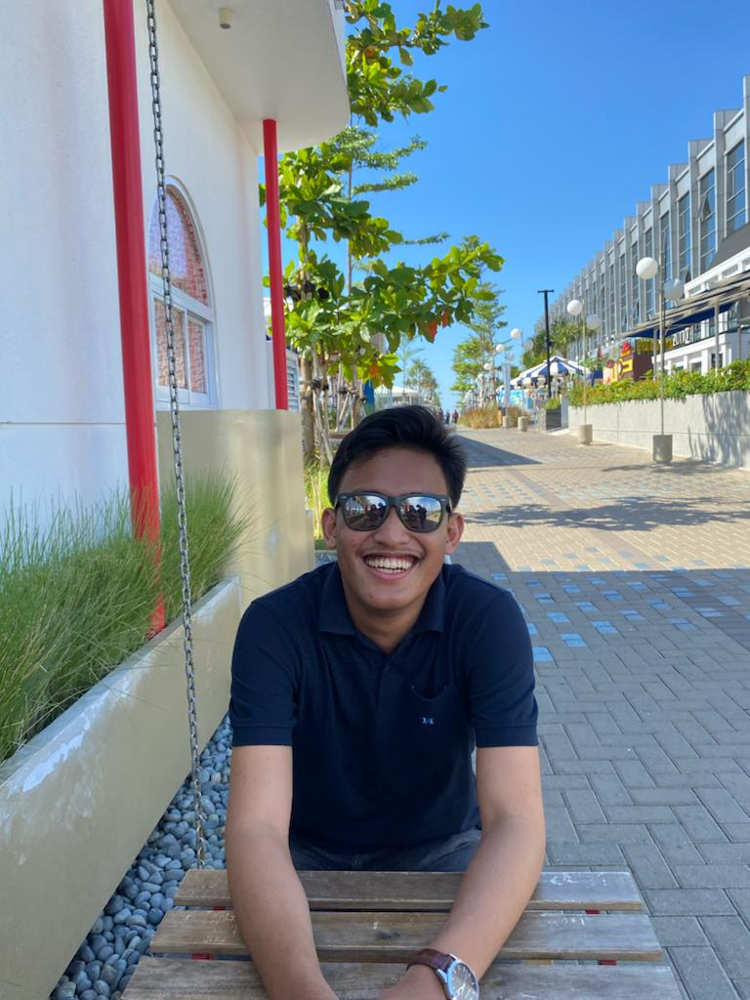

Profile Team

Alkat Zakaria
Universitas Saintek Muhammadiyah Jakarta

Defi Afrilia
STMIK Jakarta STI&K

Ria Lindawati
Universitas Bina Sarana Informatika Jakarta

Brian Kerta Raharja
Universitas Pancasila

Moch. Daffa Ryandhana
Universitas Singaperbangsa Karawang